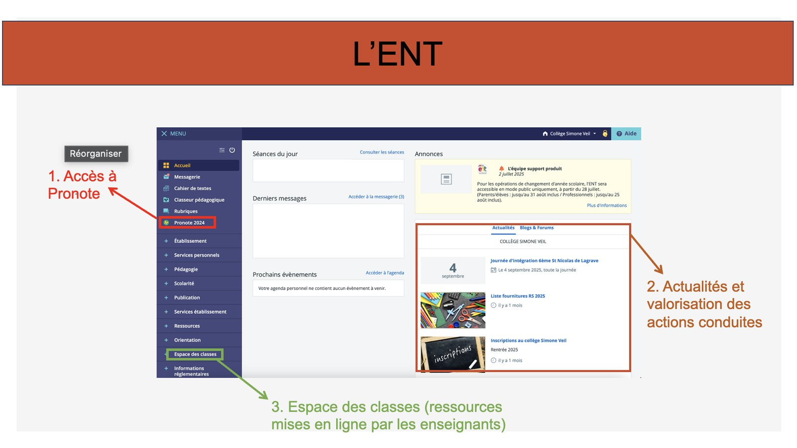
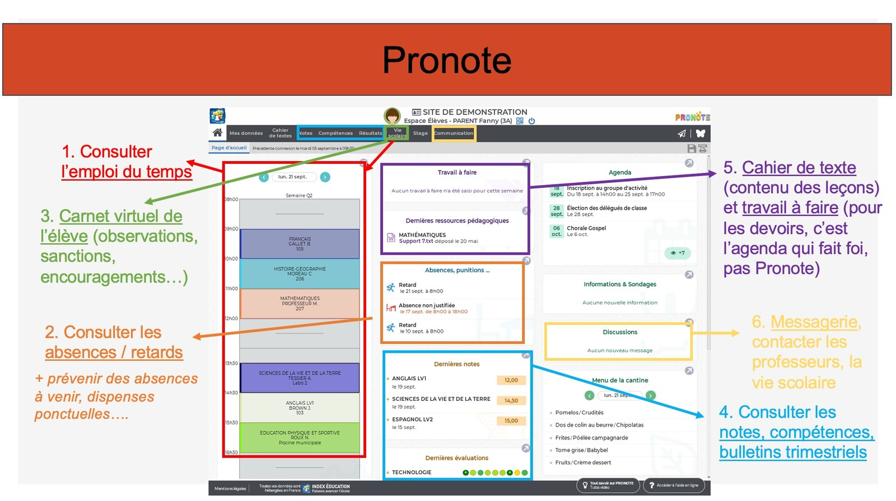
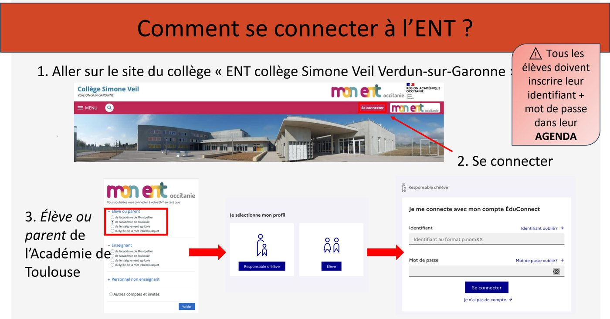
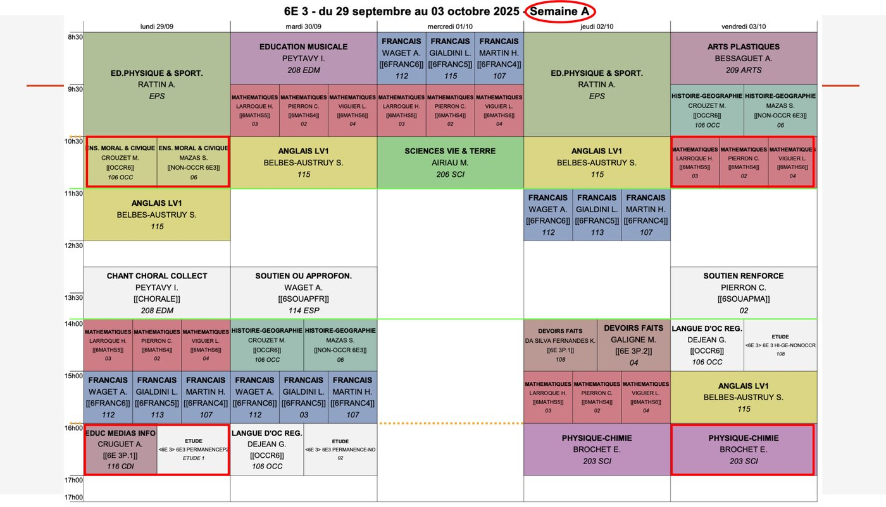
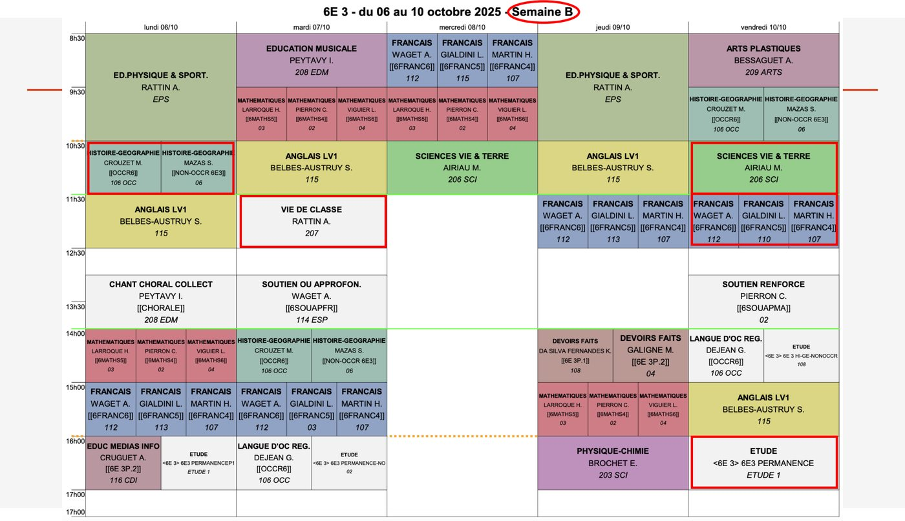

Mon entrée en 6e
Deviens un collégien autonome !
Un espace pour vous aider à devenir un collégien autonome : outils numériques, organisation et personnes ressources.

- Ma rentrée Me connecter, écrire un mail, mes papiers
- Ma vie au collège Mon sac, mes déplacements, mes absences
- Mes méthodes de travail M'organiser, apprendre, réviser
- Qui peut m'aider ? À qui je m'adresse, et pour quoi
- Espace parents Pronote, absences, rendez-vous
🚀 Ma rentrée
Les quelques démarches à faire une seule fois, en début d'année.
Se connecter à l'ENT et à Pronote
L'ENT (Espace Numérique de Travail) et Pronote sont les deux outils que vous utiliserez tous les jours pour suivre votre scolarité et communiquer avec le collège.
À quoi sert l'ENT ?
- La messagerie : pour écrire à un professeur ou à un adulte du collège — en s'adressant au bon interlocuteur et à des heures raisonnables.
- Le cahier de texte / l'espace des classes : ce qui a été fait en cours et les ressources mises en ligne par les enseignants.
⚠️ C'est l'agenda papier qui fait foi pour les devoirs à faire (voir la rubrique « Organiser ses devoirs »).

À quoi sert Pronote ?
- Consulter l'emploi du temps.
- Consulter les absences et les retards, et les justifier.
- Consulter le carnet virtuel (observations, sanctions, encouragements).
- Consulter les notes, compétences et bulletins trimestriels.

Première connexion à l'ENT
- Aller sur simone-veil-verdun.mon-ent-occitanie.fr (ou taper « ENT Verdun sur Garonne » dans un moteur de recherche).
- Cliquer sur « Se connecter ».
- Sélectionner l'espace « Élève ou parent », puis « de l'Académie de Toulouse », puis « Valider ».
- Sur le portail EduConnect, choisir le profil « Élève ».
- Saisir l'identifiant et le mot de passe provisoire donnés par le collège à la rentrée.
- Choisir son nouveau mot de passe définitif (voir la formule ci-dessous).
Comment choisir son mot de passe définitif ?
Initiale du prénom en majuscule + nom de famille en minuscule (seulement la 1re partie
si le nom est composé) + année de naissance + un point d'exclamation.
Exemple : pour Nicolas Dumont-Pellier, né en 2014 → Ndumont2014!
⚠️ Notez votre identifiant et votre mot de passe dans votre agenda, comme demandé par le collège. Ne les communiquez jamais à un(e) camarade.
Les codes de connexion aux ordinateurs du collège sont différents de ceux de l'ENT : ils vous ont été communiqués séparément (fiche papier distribuée à la rentrée).

Envoyer un mail, y compris avec une pièce jointe
Savoir écrire un mail correct à un adulte est une compétence essentielle au collège. Pensez à toujours vous adresser au bon interlocuteur, et à des heures raisonnables.
- Objet : résumez le sujet en quelques mots (ex. "Absence du 12/09 - Classe 6eA").
- Formule de politesse d'ouverture : "Bonjour Madame/Monsieur [Nom],"
- Corps du message : expliquez clairement votre demande, en phrases complètes.
- Formule de politesse de fin : "Cordialement," suivi de votre prénom, nom et classe.
- Pièce jointe : cliquez sur l'icône « trombone » ou « joindre un fichier », puis sélectionnez le document sur votre appareil avant d'envoyer.
Astuce
Relisez toujours votre mail avant de l'envoyer : objet renseigné, orthographe vérifiée, pièce jointe bien ajoutée.
Lire son emploi du temps
Votre emploi du temps est disponible sur Pronote. Voici comment le lire :
- Chaque colonne représente un jour de la semaine.
- Chaque ligne représente un créneau horaire.
- Chaque case indique : la matière, le nom du professeur, la salle.
- Une case vide ou grisée peut correspondre à une heure de permanence.


Quelques créneaux particuliers
- Heure de vie de classe : environ une fois toutes les 2 semaines, le mardi de 11h30 à 12h30. Élection des délégués, préparation des conseils de classe, cohésion de groupe...
- Devoirs faits : un créneau d'accompagnement au travail personnel, pour apprendre petit à petit à travailler en autonomie sur l'année.
- Groupes de besoin (maths / français) : la classe est répartie en groupes, différents en maths et en français. Un changement de groupe est possible jusqu'à 3 fois dans l'année, décidé par les enseignants concernés.
Certains cours peuvent être modifiés (absence de professeur, sortie scolaire...). Prenez l'habitude de consulter votre emploi du temps sur Pronote la veille pour le lendemain.
Documents à rendre en début d'année
Chaque rentrée, quelques documents sont à compléter, signer et rapporter rapidement au collège :
- L'attestation d'assurance scolaire (responsabilité civile + individuelle accident).
- La fiche de renseignements et la carte de collégien, complétées et signées.
- Le coupon attestant la prise de connaissance du règlement intérieur.
- Les documents spécifiques aux éventuelles sorties scolaires de début d'année.
Les dates précises pour rapporter chaque document sont communiquées chaque année par le collège via Pronote, l'ENT et le carnet de correspondance.
📅 Ma vie au collège
Le quotidien : ce qu'il faut faire chaque jour, et quoi faire quand ça ne se passe pas comme prévu.
Faire son sac
Préparer son cartable la veille au soir évite les oublis et le stress du matin.
- Regarder les cours du lendemain sur Pronote : quel matériel faut-il en fonction des matières ?
- Sortir les cahiers/classeurs et manuels des matières prévues.
- Vérifier sa trousse (stylos, crayon, gomme, colle, calculatrice si besoin).
- Vérifier son agenda.
- Vérifier que les 2 cartes (carte de collégien et carte de cantine) sont bien dans le sac.
- Vérifier si vous avez cours d'EPS : ajouter votre tenue de sport et une bouteille d'eau.
- S'organiser dans son travail personnel : planifier à l'avance plutôt que d'attendre la veille.
🎒 Ma check-list du soir
Je regarde mon emploi du temps de demain, puis je vérifie une par une :
Se déplacer et sortir du collège
Dans le collège
Les déplacements se font toujours :
- en rang, par deux ;
- dans le silence ;
- les escaliers se montent à droite.
Les régimes de sortie
Chaque élève se voit attribuer un régime de sortie en début d'année (indiqué sur Pronote et/ou la carte de collégien) :
| Régime | Ce que ça signifie |
|---|---|
| Pastille rouge (transport en commun) | Présence obligatoire de 8h20 à 17h ; sortie possible selon l'emploi du temps habituel en début et fin de journée. |
| Pastille rouge (sans transport en commun) | Présence obligatoire 8h20–11h30 (ou 12h30) et 13h45–17h pour les externes ; 8h20–17h pour les demi-pensionnaires. |
| Pastille jaune | Sortie possible selon l'emploi du temps habituel, en début et fin de journée. |
| Pastille verte | Sortie possible selon l'emploi du temps du jour, même en cas de modification. |
En cas de doute sur son propre régime de sortie, se renseigner auprès de la vie scolaire.
Gérer une absence ou un retard
En cas d'absence
- Les parents préviennent l'établissement dès que possible (téléphone, Pronote ou mail).
- À votre retour, présentez le mot d'absence signé par vos parents à la vie scolaire (ou justifiez-la directement sur Pronote).
- Rattrapez les cours manqués : demandez le travail fait à votre binôme de classe, ou consultez le cahier de texte / l'espace des classes sur l'ENT.
En cas de retard
- Présentez-vous à la vie scolaire avant de rejoindre votre cours.
- Un billet de retard vous sera remis pour être présenté au professeur.
- En cas de retards répétés, un mot sera transmis à vos parents.
Une absence ou un retard doit toujours être justifié. En cas de doute, adressez-vous à la vie scolaire ou à votre professeure principale.
🧠 Mes méthodes de travail
Dix fiches courtes, travaillées en Devoirs faits et à relire dès qu'on en a besoin. Chacune donne le but, les étapes, l'erreur classique et le bon réflexe.
1. J'organise mes devoirs sur la semaine
À quoi ça sert À ne plus jamais découvrir la veille au soir qu'il y a un contrôle demain, et à ne plus tout faire en même temps.
Les étapes
- Je note tout, tout de suite. Dès que le devoir est donné, je l'écris dans mon agenda : la matière, ce qu'il faut faire, et pour quel jour.
- Je regarde trois jours devant. Le soir, je ne regarde pas seulement demain : je regarde aussi après-demain et le jour suivant.
- Je commence par ce qui est à rendre le plus tôt. Les exercices à rendre d'abord, les leçons à apprendre ensuite.
- Je coupe le gros travail en morceaux. Un exposé ou une lecture, ça se fait en 3 fois 20 minutes réparties sur la semaine, pas en 1 heure la veille.
- Je barre quand c'est fait. Ce qui n'est pas barré est encore à faire : mon agenda me dit en un coup d'œil où j'en suis.
Ce qui est attendu d'un(e) élève de 6e
- Être présent(e) et ponctuel(le).
- Avoir un comportement respectueux et une attitude positive, en classe et en dehors.
- Avoir tout son matériel.
- Avoir fait ses devoirs, appris ses leçons, rattrapé ses absences (grâce aux binômes de classe).
- Avoir des résultats correspondant à son niveau.
⚠️ C'est l'agenda qui fait foi pour les devoirs à faire. Le créneau Devoirs faits de l'emploi du temps sert justement à apprendre à s'organiser seul(e), progressivement sur l'année.
❌ L'erreur classique : attendre le dernier soir « parce que ce n'est pas grand-chose ». Trois petites choses le même soir, ça fait une grosse soirée.
✅ Le bon réflexe : chaque soir, je me pose 3 questions : qu'est-ce qui est à rendre demain ? qu'est-ce qui arrive après-demain ? qu'est-ce que je peux prendre d'avance ?
2. J'apprends une leçon
À quoi ça sert À savoir sa leçon sans avoir besoin de la relire — c'est ça, savoir une leçon.
Les étapes
- Je relis en entier. Une première lecture calme, sans rien apprendre par cœur : je veux juste comprendre de quoi ça parle.
- Je repère l'essentiel. Les mots-clés, les définitions, les dates, les formules. Je les surligne ou je les recopie sur une petite fiche.
- Je me teste. Je ferme le cahier et j'essaie de réciter à voix haute, ou de réécrire de mémoire.
- Je vérifie et je comble les trous. J'ouvre le cahier, je regarde ce que je n'ai pas su, et je relis seulement cette partie-là.
- Je recommence le lendemain. 5 minutes le lendemain valent mieux que 30 minutes d'un coup : c'est en revenant plusieurs fois qu'on retient durablement.
Concrètement, chez moi
Je lis → je cache → je répète à voix haute → je m'entraîne à écrire les mots nouveaux. Et pour vérifier, j'explique ma leçon à quelqu'un de la maison : si l'autre comprend, c'est que je sais.
❌ L'erreur classique : relire cinq fois de suite. On a l'impression de savoir parce que le texte devient familier — mais dès qu'on ferme le cahier, tout s'efface.
✅ Le bon réflexe : le vrai test, c'est cahier fermé. Si je peux l'expliquer à quelqu'un avec mes propres exemples, c'est appris.
3. Je révise un contrôle : le plan sur 7 jours
À quoi ça sert À arriver au contrôle sans stress, parce que le travail a déjà été fait — un peu chaque jour.
Les étapes
- J-7 : je note la date. Dès que le contrôle est annoncé, je l'écris dans l'agenda et je vérifie ce qui est demandé : quelles leçons, quels exercices, quel type de questions.
- J-5 : je relis et je fabrique ma fiche. Une seule feuille avec l'essentiel : définitions, dates, formules, schémas.
- J-3 : je me teste. Cahier fermé. Je note ce que je n'ai pas su : c'est exactement ça qu'il me reste à travailler.
- J-2 : je refais les exercices ratés. Pas ceux que je réussis déjà — seulement ceux qui coincent, et ceux que le professeur a corrigés en classe.
- J-1 : relecture courte, puis j'arrête. 15 minutes de relecture de ma fiche, et je me couche tôt. Le sommeil fait partie des révisions : c'est la nuit que la mémoire se range.
Si le contrôle est annoncé pour dans 3 jours
Je garde le même ordre, en resserré : jour 1 je relis et je fais ma fiche, jour 2 je me teste et je refais les exercices ratés, jour 3 relecture rapide.
❌ L'erreur classique : réviser trois heures la veille au soir. C'est fatigant, stressant, et ça ne rentre pas.
✅ Le bon réflexe : cinq fois vingt minutes réparties sur la semaine font retenir bien plus que deux heures d'un coup la veille.
4. Je tiens mes cahiers et je prends des notes
À quoi ça sert À pouvoir réviser à partir de mes cahiers — un cours illisible ou incomplet ne sert à rien au moment de réviser.
Les étapes
- J'écris la date et le titre. À chaque cours. Sans titre, impossible de retrouver la bonne leçon trois semaines plus tard.
- Je respecte la mise en page du professeur. Titres, sous-titres, numéros d'exercices : c'est ce qui permet de s'y retrouver.
- Je souligne à la règle et je change de couleur pour l'essentiel. Deux couleurs suffisent : une pour les titres, une pour les mots importants.
- Je n'écris pas tout. Je note ce qui est écrit au tableau et ce que le professeur demande de noter — pas chaque phrase prononcée.
- Je complète le soir même si j'ai un trou. Je demande à mon binôme de classe ou je regarde le cahier de texte sur l'ENT.
❌ L'erreur classique : recopier au propre plus tard. « Plus tard » n'arrive jamais, et il reste un cahier à moitié vide.
✅ Le bon réflexe : un cahier tenu proprement du premier coup, c'est du temps gagné à chaque révision de l'année.
5. J'apprends du vocabulaire en langue vivante
À quoi ça sert À retenir des mots durablement, et à pouvoir les utiliser, pas seulement les reconnaître.
Les étapes
- Je lis la liste à voix haute. En langue, l'oreille aide autant que les yeux. J'écoute la prononciation si elle est disponible sur l'ENT ou dans le manuel.
- Je cache une colonne. Français caché, je donne le mot étranger. Puis l'inverse : c'est le sens qui compte, pas l'ordre de la liste.
- Je fabrique des cartes. Un petit bout de papier, le mot d'un côté, la traduction de l'autre. Je révise dans le bus, en 3 minutes.
- Je mets le mot dans une phrase. Un mot appris seul s'oublie ; un mot dans une phrase reste.
- Je repasse les mots ratés le lendemain. Je fais deux tas : ceux que je sais, ceux que je rate. Je ne révise que le deuxième tas.
❌ L'erreur classique : apprendre la liste dans l'ordre. On finit par connaître l'ordre… et pas les mots.
✅ Le bon réflexe : 10 mots par jour pendant 5 jours, c'est bien plus efficace que 50 mots la veille.
6. Je mémorise une date, une définition, une formule
À quoi ça sert À faire entrer dans la tête ce qui doit être su exactement, mot pour mot.
Les étapes
- Je découpe. Je n'apprends pas 15 dates d'un coup : je fais des paquets de 4 ou 5.
- Je répète à voix haute. Dire à voix haute fait travailler la mémoire beaucoup plus que lire dans sa tête.
- Je m'écris un mini-test. Je note les questions sur une feuille, sans les réponses. Je réponds le lendemain.
- J'utilise une image ou un moyen mnémotechnique. Une phrase drôle, un dessin, une couleur : tout ce qui accroche aide à retenir.
- Je revois à J+1, J+3 puis J+7. Trois passages courts et espacés : c'est la méthode qui fonctionne le mieux, prouvée par la recherche.
❌ L'erreur classique : tout apprendre la veille en une seule fois. La mémoire a besoin de plusieurs passages espacés pour fixer une information.
✅ Le bon réflexe : 3 minutes le lendemain, 3 minutes trois jours après, 3 minutes une semaine après : c'est appris pour de bon.
7. Je comprends la consigne avant de répondre
À quoi ça sert À ne plus perdre de points sur des questions qu'on savait faire, mais où on a répondu à côté.
Les étapes
- Je lis la consigne en entier. Jusqu'au bout, avant de commencer à écrire quoi que ce soit.
- Je repère le verbe. Cite, explique, justifie, compare, calcule : ce verbe dit exactement ce qu'on attend.
- Je compte ce qui est demandé. « Donne deux exemples » : deux, pas un. Une seule réponse = la moitié des points.
- Je regarde le barème. Une question sur 5 points n'attend pas une réponse d'une ligne.
- Je relis la consigne après avoir répondu. Une dernière fois, pour vérifier que j'ai bien répondu à la question posée.
Les verbes qui reviennent tout le temps
- Citer / relever : recopier ce qui est dans le document, sans commentaire.
- Expliquer : dire pourquoi, avec « parce que ».
- Justifier : donner la preuve, en citant le texte ou le calcul.
- Comparer : dire ce qui se ressemble et ce qui diffère.
- Décrire : dire ce qu'on voit, dans l'ordre, sans interpréter.
❌ L'erreur classique : commencer à écrire dès qu'on a reconnu le sujet, sans lire la fin de la consigne.
✅ Le bon réflexe : les verbes de consigne les plus fréquents se ressemblent d'une matière à l'autre : dès qu'on les connaît, on sait ce qu'on attend de nous.
8. Je me relis et je corrige ma copie
À quoi ça sert À récupérer les points qu'on perd bêtement : mots oubliés, accords, calcul non terminé.
Les étapes
- Je garde 5 minutes à la fin. Toujours. Une copie rendue en avance sans relecture, c'est des points laissés sur la table.
- Je relis une chose à la fois. Un passage pour les accords, un passage pour la ponctuation. Tout vérifier en même temps ne marche pas.
- Je vérifie que chaque question a une réponse. Une question sautée est le plus gros gâchis de points d'un contrôle.
- Je relis à voix basse. L'oreille repère les phrases bancales que l'œil laisse passer.
- Je regarde la correction quand la copie revient. Je note l'erreur et sa correction : c'est là qu'on progresse vraiment, pas au moment de la note.
❌ L'erreur classique : rendre sa copie dès qu'on a fini pour être le premier. Personne ne gagne de points en finissant vite.
✅ Le bon réflexe : quand la copie revient, je regarde d'abord les erreurs, pas la note.
9. Je me concentre : mon plan de travail
À quoi ça sert À travailler moins longtemps mais mieux, en arrêtant de recommencer dix fois la même page.
Les étapes
- Je choisis un endroit fixe. Une table dégagée, une bonne lumière. Pas sur le lit, pas devant la télévision.
- Je sors seulement ce qui sert. Le cahier et la trousse de la matière en cours. Le reste reste dans le sac.
- Je mets le téléphone hors de portée. Dans une autre pièce, pas retourné sur la table : une seule notification coûte plusieurs minutes de concentration.
- Je travaille par tranches. 20 à 25 minutes de travail, puis 5 minutes de vraie pause (boire, bouger) — et je recommence.
- Je me fixe un objectif précis. « Je révise le vocabulaire de la leçon 3 » plutôt que « je travaille l'anglais » : on sait quand on a fini.
❌ L'erreur classique : travailler avec le téléphone à côté « juste au cas où ». Le cerveau reste en alerte et retient beaucoup moins.
✅ Le bon réflexe : une tranche de 20 minutes vraiment concentrée vaut mieux qu'une heure entrecoupée.
10. Je travaille à plusieurs (sans perdre mon temps)
À quoi ça sert À utiliser le groupe pour apprendre plus vite, en classe comme en Devoirs faits.
Les étapes
- Je sais ce qu'on doit produire. Avant de commencer : qu'est-ce qu'on doit rendre, et pour quand ?
- On se partage le travail. Chacun sa partie, et on dit à voix haute qui fait quoi.
- Je m'explique la leçon à l'autre. Expliquer, c'est la meilleure façon de vérifier qu'on a compris — celui qui explique apprend autant que celui qui écoute.
- Je pose mes questions. Dans un petit groupe, on ose demander ce qu'on n'a pas compris. Personne ne se moque d'une question.
- On relit ensemble à la fin. Une relecture croisée repère les oublis que chacun ne voyait plus.
❌ L'erreur classique : recopier le travail d'un camarade. On rend quelque chose, mais on n'a rien appris — et ça se voit au contrôle suivant.
✅ Le bon réflexe : si je sais expliquer un exercice à quelqu'un d'autre, c'est que je sais vraiment le faire.
🆘 Qui peut m'aider ?
À qui je m'adresse, et pour quoi
Au collège, chaque adulte a un rôle précis. Savoir à qui parler fait gagner beaucoup de temps.
Professeure principale
Mme Rattin
Questions générales sur la scolarité, l'organisation, la vie de la classe. C'est le premier interlocuteur en cas de doute.
CPE
Mme Topin
Absences, retards, problèmes de vie scolaire, conflits entre élèves, téléphone confisqué.
Infirmière
Mme Antier
Malaise, blessure, traitement à prendre, questions de santé.
Psychologue de l'Éducation nationale
Mme Vincenot
Orientation, choix de parcours, difficultés personnelles.
Assistante sociale
Mme Basile
Difficultés familiales ou sociales, demandes d'aide (fonds social, restauration).
Assistants d'éducation (vie scolaire)
L'équipe de la vie scolaire
Carnet de correspondance, mots des parents, objets trouvés, surveillance et permanence.
Secrétariat
Mme Gobé, Mme Michon
Cartes de cantine et de collégien, papiers administratifs, coordonnées de la famille.
Cheffe d'établissement
Mme Rosoli
Questions générales sur le fonctionnement du collège.
Le collège compte aussi deux structures animées avec les élèves : l'association sportive (AS), pour le sport en dehors des cours, et le foyer socio-éducatif (FSE), qui anime la vie du collège (clubs, sorties, événements).
Numéros utiles en cas de besoin
- 3018 — numéro national contre le harcèlement (« Non au harcèlement »), gratuit et anonyme.
- 119 — Allô Enfance en Danger, 24h/24.
✅ Dans le doute, on va voir la vie scolaire. Elle oriente vers la bonne personne, et il n'y a jamais de mauvaise question.
Quelques conseils pour bien débuter au collège
- Pose des questions : il n'y a pas de questions bêtes — ta question peut aider d'autres camarades de la classe.
- Ne reste pas seul(e) : en cas de problème, parles-en toujours à un adulte (professeure principale, infirmière, CPE, assistant d'éducation...).
- Donne-toi du temps : le collège, ça s'apprend petit à petit, pas besoin de tout savoir dès le premier jour.
👨👩👧 Espace parents
Cette partie s'adresse aux familles. Tout ce qui précède sur cette page est écrit pour les élèves : n'hésitez pas à le parcourir avec votre enfant en début d'année.
Mon compte parent : première connexion
⚠️ Le compte parent est différent du compte de votre enfant. Il donne accès à des fonctions que le compte élève n'a pas : justifier une absence, consulter et télécharger les bulletins, écrire aux professeurs.
Les étapes
- Aller sur simone-veil-verdun.mon-ent-occitanie.fr et cliquer sur « Se connecter ».
- Sélectionner l'espace « Élève ou parent », puis « de l'Académie de Toulouse », puis « Valider ».
- Sur le portail EduConnect, choisir le profil « Représentant légal » (et non « Élève »).
- Se connecter avec l'identifiant EduConnect fourni par le collège, ou activer son compte avec le numéro de téléphone portable communiqué à l'établissement.
- Une fois dans l'ENT, Pronote est accessible directement, sans nouveau mot de passe.
Vous avez plusieurs enfants au collège ?
Un seul compte parent suffit : tous les enfants scolarisés dans un établissement de l'académie apparaissent, et un menu permet de passer de l'un à l'autre.
En cas de difficulté de connexion, le secrétariat du collège peut réinitialiser un compte.
Prévenir d'une absence et la justifier
Deux tutoriels courts, à regarder directement ici sans quitter le site.
Le jour même : prévenir
- Prévenir l'établissement dès que possible, le matin de préférence : par téléphone auprès de la vie scolaire, ou via Pronote.
- Indiquer le motif et la durée prévue de l'absence.
Au retour : justifier
- Soit en saisissant le motif directement sur Pronote (voir le tutoriel ci-dessus).
- Soit en remplissant et signant le billet d'absence du carnet de correspondance, que votre enfant présente à la vie scolaire à son retour.
⚠️ Toute absence doit être justifiée, même d'une seule heure. Une absence non justifiée est signalée aux familles, puis à l'administration si elle se répète.
Pensez aussi à faire rattraper les cours manqués : le cahier de texte est consultable sur l'ENT, et chaque élève a un binôme de classe.
Suivre le travail et les résultats de mon enfant
Depuis le compte parent, quatre rubriques de Pronote répondent à l'essentiel des questions :
| Je veux savoir… | Je regarde… |
|---|---|
| Ce qui a été fait en cours et ce qui est à faire | Le cahier de texte (rubrique « Travail à faire ») |
| Où en est mon enfant dans chaque matière | Les notes et les compétences, puis le bulletin à chaque trimestre |
| S'il a été absent, en retard, ou s'il y a eu une remarque | Les absences et le carnet virtuel (observations, encouragements, sanctions) |
| Ce que le collège nous communique | Les informations et sondages, et la messagerie de l'ENT |
Un conseil
Regarder Pronote une à deux fois par semaine avec son enfant suffit largement, et vaut mieux qu'une consultation quotidienne : l'objectif de l'année de 6e est justement que l'élève devienne autonome dans son organisation. C'est l'agenda qui reste l'outil de référence pour les devoirs à faire.
Écrire à un professeur, demander un rendez-vous
- Par la messagerie de l'ENT ou de Pronote : c'est la voie la plus simple et la plus rapide.
- Par le carnet de correspondance : votre enfant fait signer le mot par le professeur concerné.
- Par téléphone, auprès du secrétariat ou de la vie scolaire, pour ce qui est urgent.
Bon à savoir
- Les professeurs consultent leur messagerie sur leur temps de travail : comptez quelques jours avant une réponse, et n'attendez pas de retour le week-end ou pendant les vacances.
- Pour une question qui concerne l'ensemble de la scolarité (comportement général, organisation, orientation), adressez-vous d'abord au professeur principal.
- Pour tout ce qui touche aux absences, retards et à la vie scolaire, l'interlocuteur est la CPE.
La liste complète des interlocuteurs se trouve dans la rubrique « Qui fait quoi au collège ? » plus haut.
Les rendez-vous de l'année
| Rendez-vous | Quand | À quoi ça sert |
|---|---|---|
| Réunion de rentrée des parents de 6e | [à compléter] | Rencontrer l'équipe, découvrir l'ENT et Pronote, poser ses questions. |
| Conseil de classe du 1er trimestre | [à compléter] | Bilan du trimestre, remise du bulletin. |
| Rencontre parents – professeurs | [à compléter] | Échanger individuellement avec les professeurs de la classe. |
| Conseil de classe du 2e trimestre | [à compléter] | Bilan et conseils pour la suite de l'année. |
| Conseil de classe du 3e trimestre | [à compléter] | Bilan de l'année et décision de passage. |
Les dates exactes sont communiquées chaque année par le collège via Pronote, l'ENT et le carnet de correspondance.
Un problème ? Les réponses les plus fréquentes
| Votre situation | Ce qu'il faut faire |
|---|---|
| J'ai perdu mon mot de passe EduConnect | Utiliser « Identifiant ou mot de passe perdu » sur le portail EduConnect, ou contacter le secrétariat. |
| Mon enfant a perdu ses identifiants | S'adresser à la vie scolaire, qui peut les redonner. |
| J'ai changé d'adresse, de téléphone ou de mail | Prévenir le secrétariat : c'est ce qui permet d'être joint en cas d'urgence. |
| Une question sur la cantine ou la carte de self | Secrétariat (cartes, régimes, facturation). |
| Une question sur le transport scolaire | Le transport ne dépend pas du collège, mais la vie scolaire peut vous orienter. |
| Mon enfant ne va pas bien | En parler sans attendre : professeur principal, CPE, infirmière ou assistante sociale selon la situation. |
En cas de doute sur l'interlocuteur, la vie scolaire est toujours un bon point de départ.